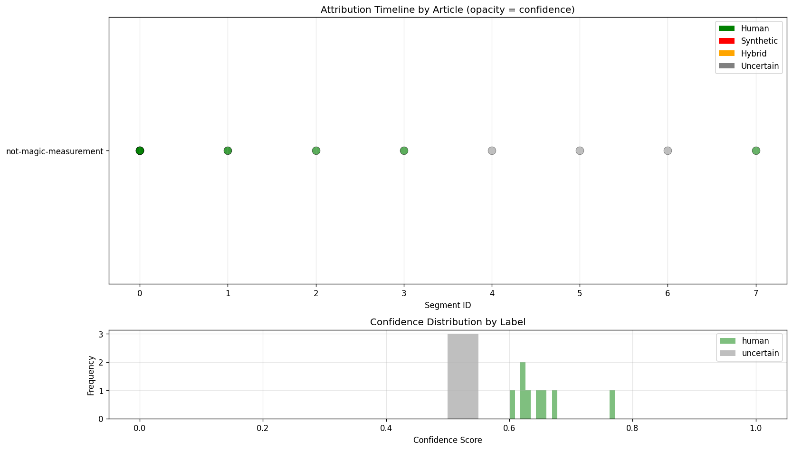
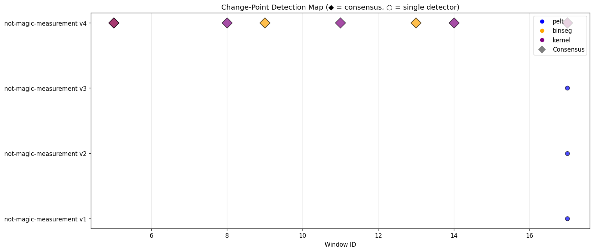

Multi-module pipeline analysis report
Generated: 2025-11-11T19:11:27.322171Z
Segment labels and confidence across all documents
Detected boundaries between human and synthetic content
| Article | Version | Windows | Segments | Primary Label | Avg Confidence |
|---|---|---|---|---|---|
| not-magic-measurement | v1 | 123 | 1 | HUMAN | 0.630 |
| not-magic-measurement | v2 | 155 | 1 | HUMAN | 0.623 |
| not-magic-measurement | v3 | 129 | 1 | HUMAN | 0.626 |
| not-magic-measurement | v4 | 94 | 8 | HUMAN | 0.606 |
| Segment | Article | Version | Label | Confidence | Windows | Char Range |
|---|---|---|---|---|---|---|
| #0 | not-magic-measurement | v1 | HUMAN | 0.630 | 123 | 0–10784 |
| #0 | not-magic-measurement | v2 | HUMAN | 0.623 | 155 | 0–13453 |
| #0 | not-magic-measurement | v3 | HUMAN | 0.626 | 129 | 0–9840 |
| #0 | not-magic-measurement | v4 | HUMAN | 0.674 | 5 | 0–837 |
| #1 | not-magic-measurement | v4 | HUMAN | 0.771 | 3 | 628–1166 |
| #2 | not-magic-measurement | v4 | HUMAN | 0.654 | 1 | 1048–1201 |
| #3 | not-magic-measurement | v4 | HUMAN | 0.648 | 2 | 1090–1412 |
| #4 | not-magic-measurement | v4 | UNCERTAIN | 0.500 | 2 | 1202–1608 |
| #5 | not-magic-measurement | v4 | UNCERTAIN | 0.500 | 1 | 1413–1674 |
| #6 | not-magic-measurement | v4 | UNCERTAIN | 0.500 | 3 | 1514–1857 |
| #7 | not-magic-measurement | v4 | HUMAN | 0.601 | 77 | 1736–7757 |
Pipeline version: 3.4
Total features: 17
burstiness_token_cv_winburstiness_topk_mean_cv_winstopword_rate_wincontent_rate_winhapax_rate_winmean_sent_len_tok_winstd_sent_len_tok_windepth_mean_wincoord_rate_winsubord_rate_windm_density_per_100toks_wintopic_changedparaphrase_entropyidiom_deltahedge_densityintensifier_densitycontradiction_flag